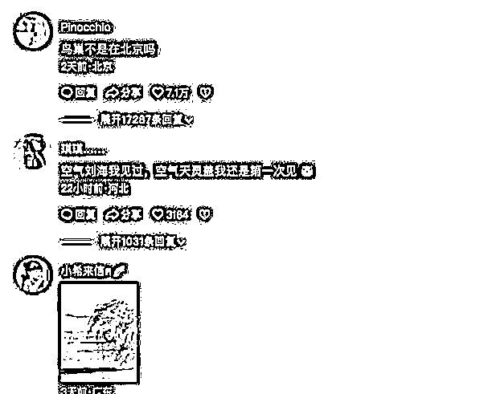
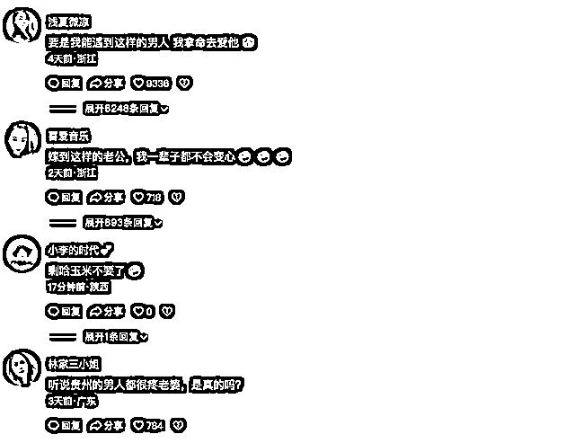
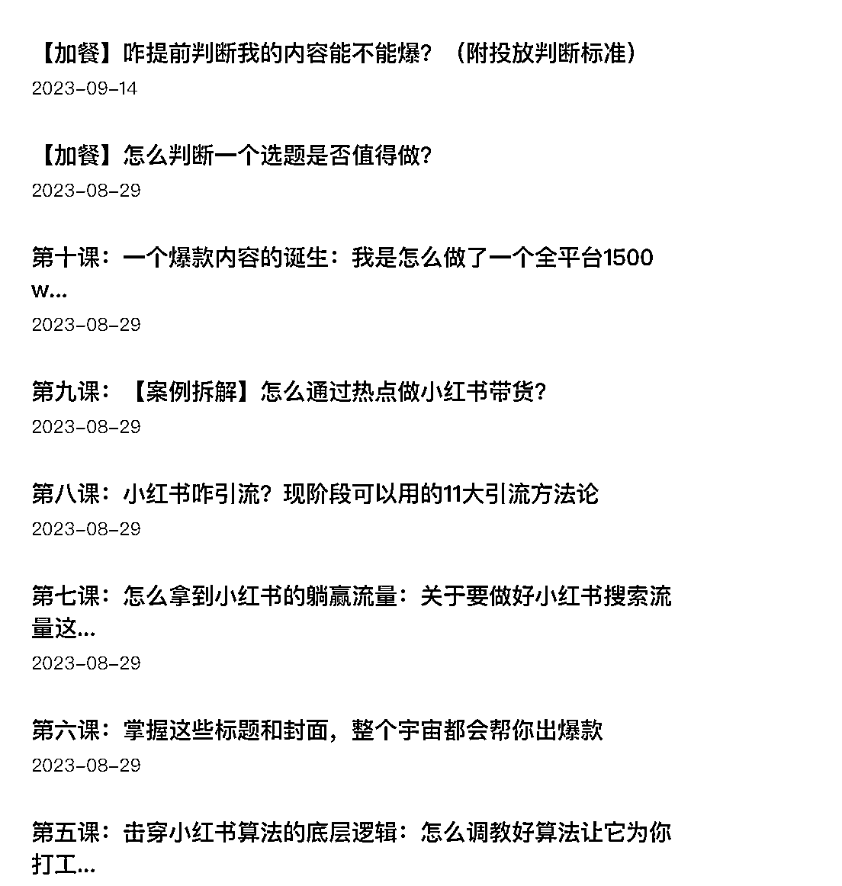

来源：https://j9murflfbi.feishu.cn/docx/QO5WdOVGpoYf4jxkWLrcfyVpnQf
先简单介绍一下我自己，我叫丁丁，做过8年左右的内容，带领团队从0到1做过几个百万IP，辞职前在一个世界五百强做内容运营总监，现在自己出来做了一个工作室，给客户做IP流量咨询和陪跑。
最近在给一些公司做小红书和抖音陪跑的时候，他们在实操的过程中，比较困惑，怎么做一个高互动的评论区，在自己的内容和选题里，找不到和用户的互动点。
我们为啥要注重评论区呢。
这里简单说几句评论区为啥重要这个事儿。
我在之前的课里，和大家讲过，小红书的算法评价体系里，小红书内部CES评分体系=点赞数X1分+收藏数X1分+评论数X4分+转发数X4分+关注数X8 分，评论所占的权重是非常高的。
抖音平台的第三方平台蝉妈妈上，最近有一个IPM，作为对视频非常重要的一个评判维度。
啥叫IPM呢，就是千次互动指数。
然后，再补充一个重要的结论‼️
在小红书，一个卖货的笔记，主要看的就是它的评论区。
那么怎么做一个高互动的评论区呢？这里给大家一些小的方法论。
这是一条大家做抖音和小红书都能用得着的实操方法论。
标题是最重要的内容位，一个百试不爽的一个高评论和高互动的标题和内容方向，就是测一测系列。
比如最近七天，小红书有一个高达11.7万的高互动的笔记，就是从“测测你的输入法文化程度”这个方向切入的。
再有就是新奇特系列，比如最近在抖音上比较火的一条视频，一个保护手机的新设备，就6秒的视频，但是那个设备实在是太新奇了，而且作者的标题文案也非常有互动感。“这下应该能好好保护我的手机了吧。”
收获了大概56.5万的评论。
我们来看下面这条，评论高达4.8万的笔记。
“说真的！这次我一定要跟上这个泼天的富贵
这些都是我自己设计的下睫毛～这些款式如果我能做出来姐妹们会买吗！”
这个应该很好get，就是在正文文案中，做强互动引导。
在这里面可以注意一点，就是在置顶评论，这样一个黄金内容位，可以继续强化和巩固你的评论区成果，
“量产之后在这个帖子蹲过的姐妹到时候一律送赠品！！（赠品是我的其他idea，暂时保密，肯定会很有用的！！相信我）到时候带着截图来！”
再次，最好可以激发评论区高互动的，就是选题本身具有很强的议题和讨论性，看得粉丝具有广谱的代入感。
比如李佳琦事件后，有一个北京大学录取通知的，打的就是一个和舆论情绪的反差。
李佳琦这个事件，舆论的一个风相比较一致共识点是，买不起眉笔真的不怨我，总有资本爸爸想害我。
但北京大学的这个690的录取分数，大家纷纷表示，这个高攀不起的原因，也不在别的方面，主要是怨自己。
我把这段能拿到抖音28.6w评论的标题和描述，粘贴到下面，大家可以感受一下，这个里面对舆论情绪反差感拿捏的准确性。
“北京大学录取通知书带货，这么多年一直这个分❗#北大 #李佳琦 #带货#如何看待李佳琦带货争议言论 #李佳琦文学 注：本视频内容纯属整活，不代表作者个人观点。”
在这一条的方法里，大家尤其可以关注一下你内容结尾的位置：是很容易大家看完视频，想要留下点儿什么痕迹的位置。
比如最近抖音有一条视频，讲的就是强价值观表达的。
百善孝为先，孝顺是根本，儿子做的很对，狠狠的给我们上了一课#百善孝为先 #情感正能量
大家可以去搜一下。
在结尾的时候，视频就在输出自己的强价值观表达，你怎么对待老人，你的下一代，就会怎么对待你，
并且，在文案和视频拍摄上，也做了强引导，最后这个儿子对镜头面前的观众说，大家觉得我做的对么？
你看完这样的视频，你会做互动么？
截止我们发这节课，这条视频的评论，是2.9万，排在抖音热门视频榜周榜第四名。
比如最近7天，在抖音上比较火的低粉高赞、排名第一的评论区，来自一条婚礼现场的片段，
里面预设了一个非常大的槽点，就是新郎的发型。
这里面把评论效果巩固和引导的点，是在评论里，也埋了很巧妙的段子。
我们先来看一下。

感受到了么？
这三条评论，其实也有封装的意思。
封装其实是一个计算机程序术语，指的是，把对象密封的过程。
是不是很形象。
用到我们的评论区，它指的就是，在强引导你这个视频的评论方式或者叫观看方式。
因为很多人，是先从评论区看一条内容的。
所以对评论的引导是非常有必要的，甚至我们要积极布局，用小号做引导，利用羊群效应的心理。
这里面有很巧妙的一点，就是它在评论的前几条，就采用了@朋友一起看的这个形式，这个对于下面其他评论排队@ ，起到了非常好的引导作用，也很有利于视频进一步扩散传播。
这样的逻辑，其实在小红书和抖音都是适用的。
找到一点儿感觉了嘛？
我们接下来，再看看排名第二的，看看大家能不能再找到那个感觉。
博主发了一段自己颤颤巍巍下老君山的片段。
大家可以去抖音搜“最低标准就可以了”，一个只有三千多粉丝的博主，咋能做出一条44.4万评论的评论区呢？
大家在看我下面讲的内容之前，可以先去看一下这条只有8秒的视频。
你们感觉到了么，这条视频你看完会不会代入感超强，想没想起来你在下山的时候被腿抖折磨的恐惧了？
代入完之后，会不会很想评论一句。
下面还有一些非常精彩的二创评论，比如，“去的时候28，回来的时候82。”
这里比较有代表性的，是可以利用人都喜欢有好的彩头、好的寓意的这种心理，做强引导。
比如我们来看小红书这条近7天，排名第四的一条高赞笔记。
“大数据不会骗人，你刷到这里，留下一句，‘一顺百顺’，你担心的那件事，好结果马上就来临。”
你就会拥有一个“一顺百顺”的评论区。
这个我们在前面讲过，在这里，我们再单独拎出来说一遍。
有价值观表达的视频，最适合用的就是这样的评论引导方式。
比如我们来看抖音上这条视频。
https://www.douyin.com/video/7276993521637215545
拍的就是丈夫回家看老婆的视频片段。
评论区都是夸赞老公的，或者，“这样的老公哪里去领”。就是预设了一个价值观和情绪引导的评论区，是把人们潜意识里，对家庭夫妻美好恩爱的价值的期待，具像化表达，就是下面的这些评论。

其实一个优质的评论区，就是去放大人群广场的过程。
这个过程，需要你自己有建设意识。一部分评论，是需要用好小号和水军，做好前期最基础的引导的，把场子做热之后，就会有越来越多的自来水源源不断流过来。
这里面一些小的技巧就是，小号的标签，最好和我们希望算法给我们账号打上的标签，保持一致。比如我们希望算法标记我们的账号是，中产宝妈，那我们去找的评论区引导的账号，最好也具有这样的一些标签属性和行为特征。
如果你的内容的互动点和槽点都比较弱，那有没有办法在评论区努力一下呢？
也有。
比如，抖音上这条“带爸爸妈妈体验他们肩膀上的世界”这条视频。作为创作者，我们可以利用好手里的置顶评论这个工具。
好了，这就是这期的内容了。
再补充一条关于评论区的小知识，大家知道评论区的评论，谁的排在前，谁的排在后，原理是什么么？
其实呀，除了该条视频评论下面本身引发的点赞和延伸评论外，作者回复得好的话，也是给该条评论和评论区加权的方法。
针对咋系统做账号，尤其是做小红书账号，我根据这两年咨询陪跑的客户案例，梳理了一套课程，大家感兴趣的可以一起交流～

最后，谢谢生财这样一个社区，给大家自由交流和表达的机会。
祝所有财友，在新的一年，都能实现眉笔自由～！